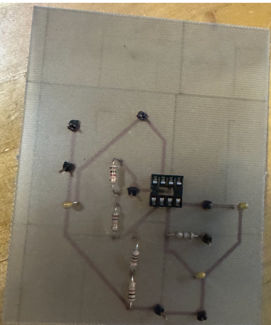

Hi! My name is Blair Bassett.
Email: blairbassett@ku.edu
I just finished a filter design lab for Circuits II. The image below is the low pass filter my group designed and soldered.
This a video on basic soldering, that was helpful to me during the lab: